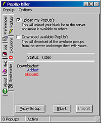
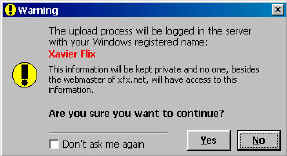

| Synchronizing |
This feature is an original idea from a user of an older version of PopUp Killer.
With this feature you will be able to share your PopUp's with others as well as to download all the PopUp's that others have made available.To open the Synchronize dialog, simply select the Synchronize option from PUK's main menu.
To begin either the download or upload process, simply:
- Check the boxes for the operation(s) you would like to perform.
- Make sure you're connected to the Internet.
- And click the Start button.
- The rest of the process will run just automatically...
When clicking the Upload my PopUp's checkbox you'll receive a warning dialog.
This warning alerts you that PUK will upload your popups under a file with the name under which your copy of Windows was registered when it was installed.Your name, will NOT be used for anything.
Actually, the server automatically deletes PUK's uploads everyday.Anyway, if you don't like this, simply do not upload your popups.
NOTE: Uploading your black list to the server is no longer available.